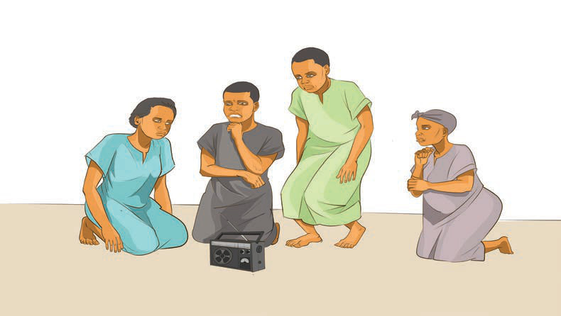

Uigizaji bubu
Uigizaji bubu ni sanaa ya uigizaji ambayo muigizaji hutumia vitendo bila maneno kufikisha ujumbe kwa hadhira. Ni sanaa yenye nguvu inayotegemea lugha ya ishara, miondoko ya mwili pamoja na muonekano wa uso au sura, badala ya maneno katika kuwasilisha ujumbe kwa hadhira yake. Aina hii ya uigizaji hujulikana kama uigizaji wa kimyakimya na una historia ndefu. Uigizaji bubu unasadikika kuwa ulianza pale mwanadamu wa kwanza alipoanza kuishi duniani. Alitumia lugha ya matendo katika kuwasiliana kipindi ambapo alikuwa hajagundua lugha ya kuzungumza. Kwa sababu hiyo, lugha ya vitendo, inachukuliwa kama ni lugha ya kale ambayo mwanadamu aliitumia katika mawasiliano.
Vilevile, kama sanaa ya jukwaani, uigizaji bubu, ulivuma karne ya ishirini ambapo ulitumika kama aina mojawapo ya uigizaji. Uigizaji wa aina hii pia ulitumika katika filamu za awali kabla ya uvumbuzi wa sinema za sauti. Sanaa hii imeendelea kuwa muhimu hata katika kipindi hiki cha maendeleo ya teknolojia. Unatumika katika filamu na maonyesho ya jukwaani. Uigizaji wa namna hii haujaishia jukwaani tu, bali unatumika pia katika maisha ya kila siku pale maneno yanapokuwa sio ya lazima. Kielelezo namba 2 kinaonesha wanafunzi wakifanya igizo bubu jukwaani.
